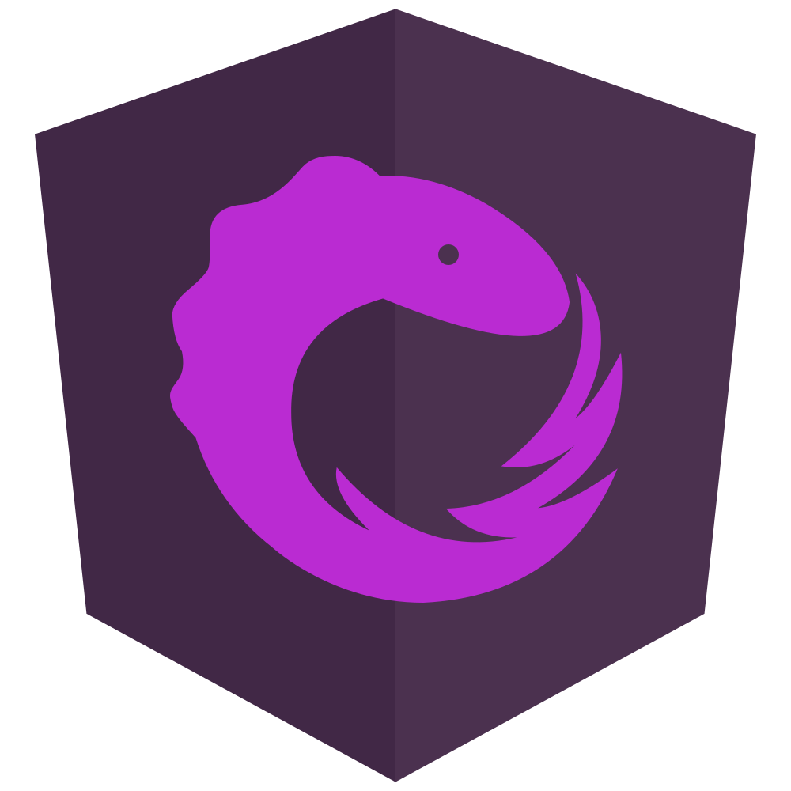

<mat-toolbar color="primary">
  <button mat-button [routerLink]="'/'">
    
    <span class="icon-title">RxJs</span>
  </button>
  <span class="spacer"></span>
  <button mat-button>
    
    <span class="icon-title">GitHub</span>
  </button>
</mat-toolbar>
